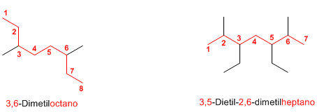
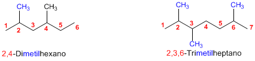
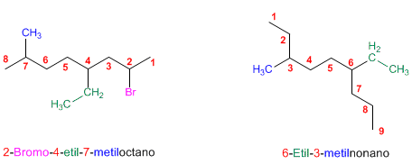
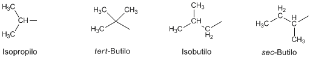
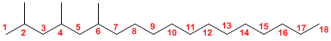
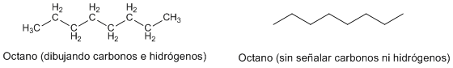
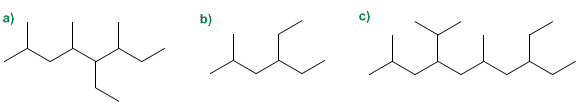
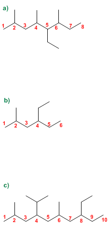

IES Valle del Alberche

🧭 Mnemotecnia principal: CNS
Antes de aplicar cualquier regla IUPAC, memoriza el orden C → N → S. Es la estrategia base para nombrar cualquier hidrocarburo.
Elegir la cadena principal: la más larga y, en empate, la más ramificada.
Numerar la cadena desde el extremo que dé los localizadores más bajos.
Nombrar y ordenar los sustituyentes alfabéticamente con sus localizadores.
“Primero la Cadena, luego la Numeración, después los Sustituyentes.”
📘 Enunciado
Los alcanos son hidrocarburos saturados, formados únicamente por carbono e hidrógeno unidos mediante enlaces simples (C–C y C–H). Responden a la fórmula molecular general:
Se pide nombrar y formular alcanos ramificados aplicando correctamente las reglas de la IUPAC (Unión Internacional de Química Pura y Aplicada), que se resumen en cuatro reglas básicas:
- Regla 1: elección de la cadena principal (la más larga; en caso de empate, la más ramificada).
- Regla 2: numeración de la cadena principal (desde el extremo más cercano a un sustituyente).
- Regla 3: construcción del nombre (sustituyentes alfabéticamente con sus localizadores + nombre de la cadena principal).
- Regla 4: reconocimiento de los sustituyentes con nombres comunes.

🎯 Objetivo
Al finalizar este bloque, el estudiante debe ser capaz de:
- Identificar la cadena principal de un alcano ramificado, eligiendo la de mayor longitud y, en caso de empate, la más ramificada.
- Numerar correctamente la cadena principal atendiendo a la posición de los sustituyentes.
- Escribir el nombre IUPAC ordenando los sustituyentes alfabéticamente y colocando sus localizadores.
- Reconocer los sustituyentes de nombre común (isopropilo, isobutilo, sec-butilo, tert-butilo…).
- Aplicar los prefijos multiplicadores (di-, tri-, tetra-…) y las reglas de alfabetización.
- Dada una fórmula desarrollada, obtener su fórmula molecular y su fórmula condensada.
- Recorrer el camino inverso: dibujar la estructura a partir del nombre.
⚙️ Fundamento teórico y procedimiento


- Los prefijos multiplicadores (di-, tri-, tetra-…) no cuentan para el orden alfabético.
- Los prefijos iso-, neo- y ciclo- sí alfabetizan (forman parte del nombre del sustituyente).
- Los prefijos sec- y tert- no alfabetizan (se consideran junto a la raíz del sustituyente).
- El nombre completo se escribe todo junto, sin espacios, separando números con comas y números de letras con guiones.
| Nombre común | Nombre sistemático | Fórmula |
|---|---|---|
| metilo | metilo | –CH3 |
| etilo | etilo | –CH2–CH3 |
| propilo | propilo | –CH2–CH2–CH3 |
| isopropilo | 1-metiletilo | –CH(CH3)2 |
| butilo | butilo | –CH2–CH2–CH2–CH3 |
| sec-butilo | 1-metilpropilo | –CH(CH3)–CH2–CH3 |
| isobutilo | 2-metilpropilo | –CH2–CH(CH3)2 |
| tert-butilo | 1,1-dimetiletilo | –C(CH3)3 |

- Localiza todas las cadenas carbonadas posibles y elige la más larga (Regla 1).
- Si hay empate, cuenta los sustituyentes de cada candidata y quédate con la más ramificada.
- Numera la cadena por los dos extremos y compara los localizadores obtenidos; elige la numeración que dé los números más bajos (Regla 2).
- Identifica y nombra cada sustituyente, agrupando los repetidos con los prefijos di-, tri-, tetra-…
- Ordena los sustituyentes alfabéticamente con sus localizadores (Regla 3).
- Añade al final el nombre de la cadena principal con la terminación -ano.
✅ Resultado
\[ \boxed{\text{localizador}-\text{sustituyente}(\,-\text{localizador}-\text{sustituyente}\ldots) + \text{cadena principal} } \]
La más larga
En empate, la más ramificada
Da el nombre base (…ano)
Orden alfabético
Con sus localizadores
Prefijos di-, tri-, tetra- si se repiten
La aplicación ordenada de las cuatro reglas permite nombrar cualquier alcano ramificado sin ambigüedad y, a la inversa, dibujar la estructura a partir de su nombre.
📌 Conclusión: el nombre IUPAC de un alcano es una «dirección» inequívoca de la molécula: la cadena principal indica el esqueleto, los localizadores la posición y los nombres de los sustituyentes la identidad de las ramificaciones. Dominar las cuatro reglas es la base para nombrar cualquier compuesto orgánico posterior (alquenos, alquinos, derivados halogenados, alcoholes…).
🧪 DESMITIFICANDO la teoría: problemas resueltos Pulsame
Problema 1 Formular a partir del nombre
\(\text{CH}_3-\text{CH}(\text{CH}_3)-\text{CH}_2-\text{CH}(\text{CH}_3)-\text{CH}_2-\text{CH}(\text{CH}_3)-(\text{CH}_2)_{11}-\text{CH}_3\)

Problema 2 Fórmula molecular, condensada y número de hidrógenos
| Carbono | Tipo | Nº de H |
|---|---|---|
| C1 y C8 (extremos) | –CH3 | 3 H cada uno |
| C2 a C7 (interiores) | –CH2– | 2 H cada uno |
| Total | 8 carbonos | 3 + 3 + 6·2 = 18 H |

Problema 3 Nombrar compuestos (IUPAC)

- Cadena principal: se elige la de mayor longitud, 8 carbonos (octano).
- Numeración: comienza por el extremo más próximo a un sustituyente.
- Sustituyentes: metilos en 2, 4 y 6; etilo en 5.
- Nombre: 5-Etil-2,4,6-trimetiloctano
- Cadena principal: 6 carbonos (hexano).
- Numeración: comienza por la izquierda (metilo en 2). Por la derecha el etilo estaría en 3.
- Sustituyentes: etilo en 4 y metilo en 2.
- Nombre: 4-Etil-2-metilhexano
- Cadena principal: la cadena más larga es de 10 carbonos (decano).
- Numeración: empieza por la izquierda, ya que así se encuentra antes el primer sustituyente.
- Sustituyentes: metilos en 2 y 6; etilo en 8; isopropilo en 4.
- Nombre: 8-Etil-4-isopropil-2,6-dimetildecano
